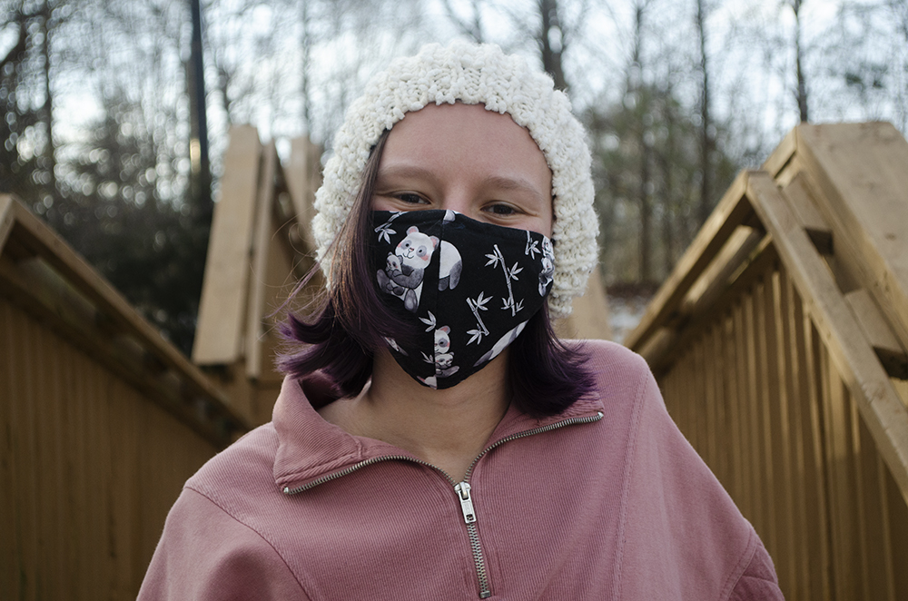
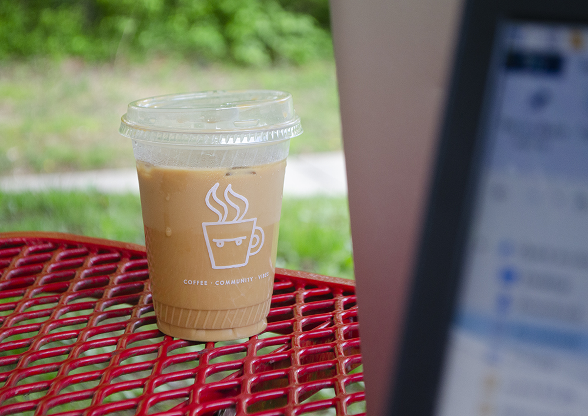
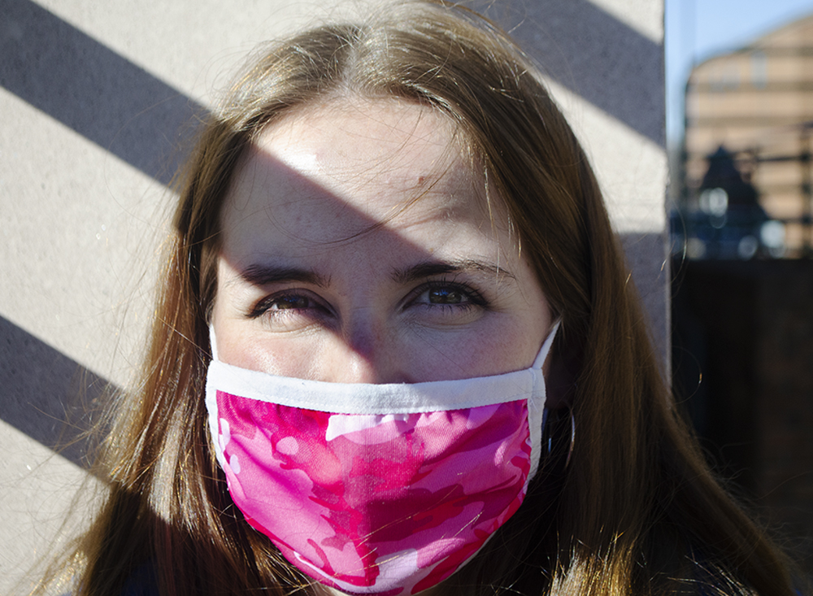
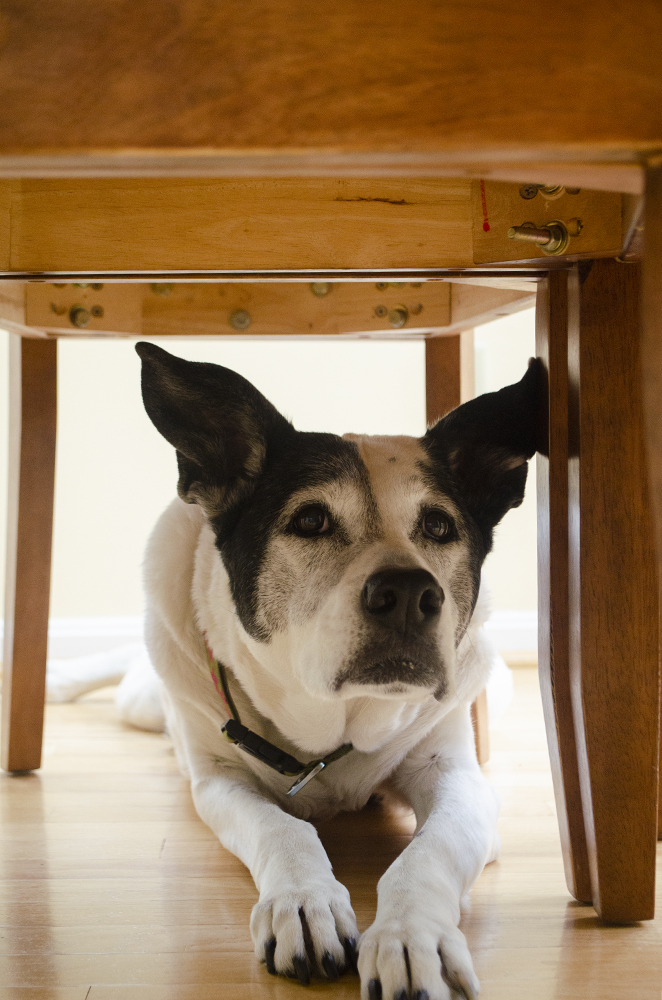
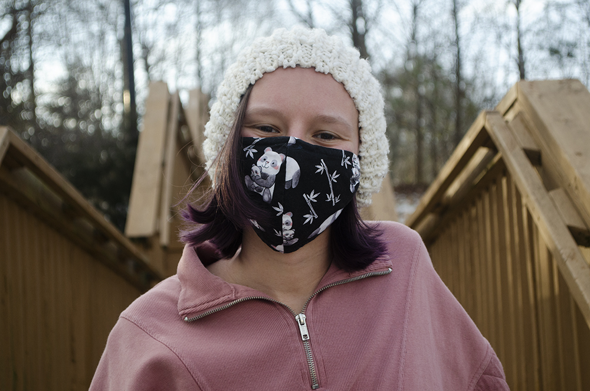
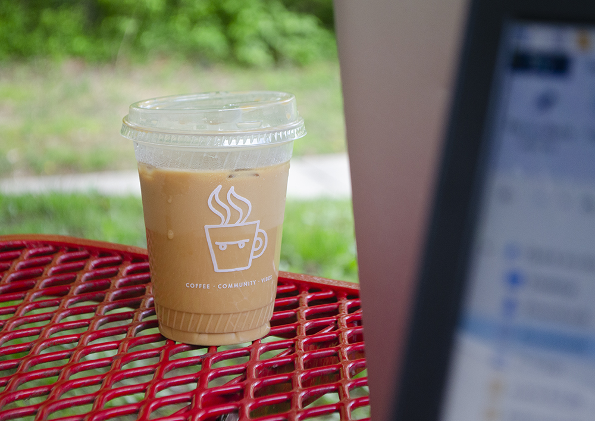
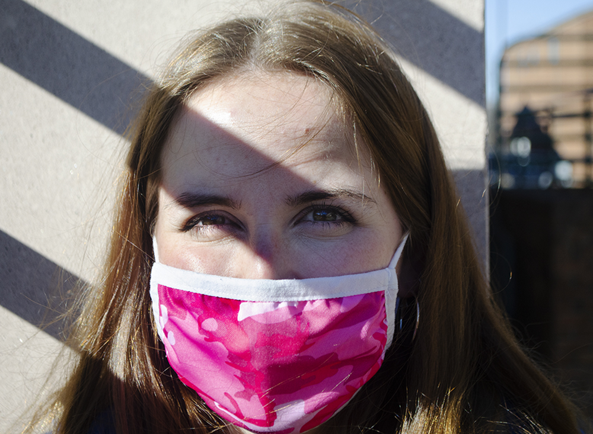
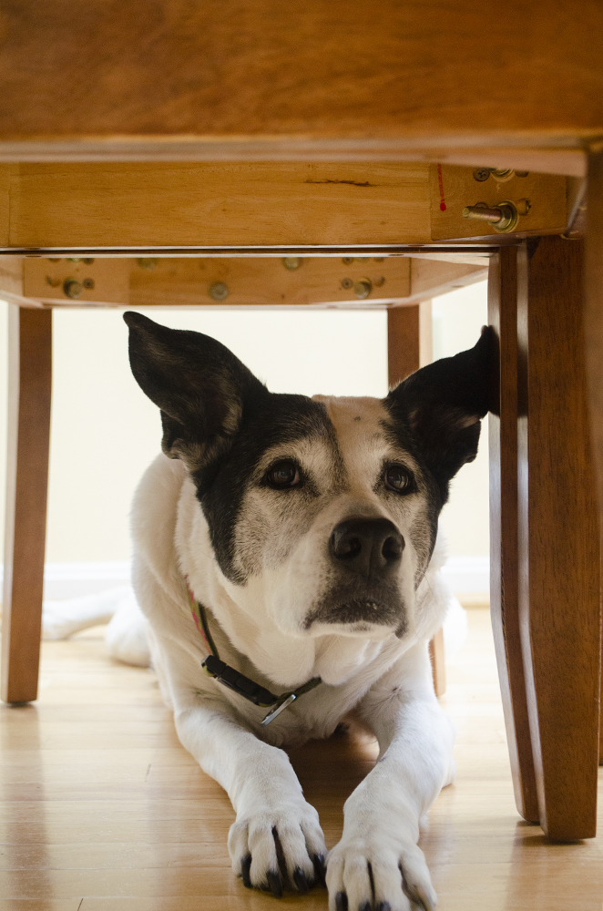
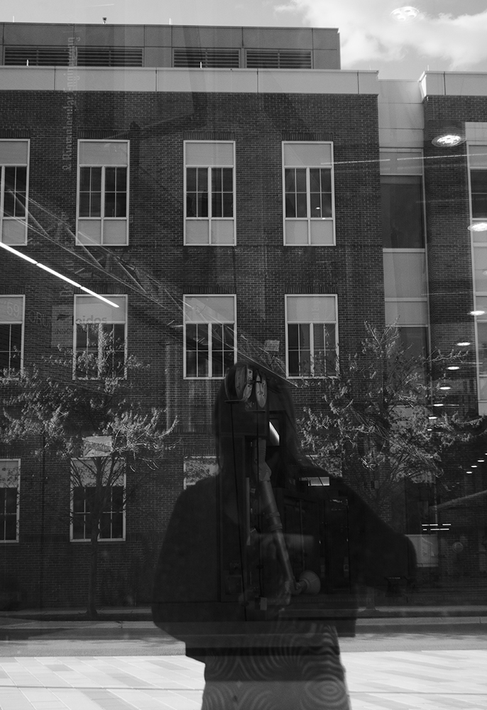
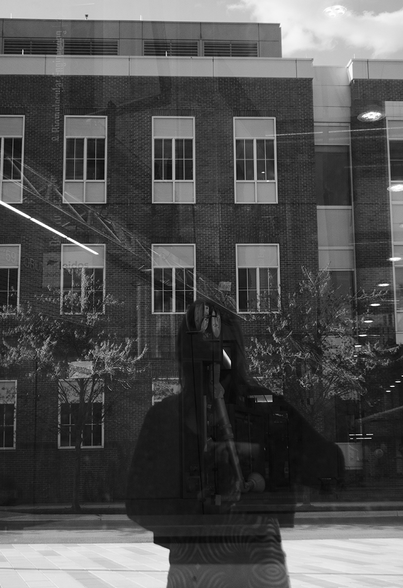

Reporting
The Diamondback:
-
Prince George’s council moves forward with new redistricting map, but backlash persists
“I don't think it could be any more obvious at all that they're rigging this election,” said College Park City Council member Kate Kennedy.
-
We Skate at UMD promotes inclusivity, empowerment of women and LGBTQ+ skaters
The group, which launched in April 2021, welcomes both rollerbladers and skateboarders of all levels to lessons and group skate sessions.
-
PGCPS community expresses mixed feelings with full in-person return to the classroom
PGCPS classes began last week.
-
PGCPS to reduce school security personnel with arresting powers next school year
Though there are some county community members who support the removal of the officers, others are concerned about student safety if they are removed.
-
With PGCPS set to return to classrooms in April, some teachers worry for their safety
Some educators worry the school system's plans are insufficient.
-
Coronavirus complicates college decisions for Prince George’s County high school seniors
Virtual tours and lack of in-person counseling has made it difficult for seniors to chose where they'll attend in the fall.
-
Here’s what you need to know about the COVID-19 vaccine in Prince George’s County
Only 4 percent of county residents and workers have received the first dose of the vaccine.
-
Taking a language class online has proved difficult for some UMD students
Lack of consistent in-person instruction paired with ongoing technological difficulties have caused some students to struggle.
-
UMD is using its community garden to bolster its fight against food insecurity on campus
The garden plans to work with the Campus Pantry throughout the summer.
Baltimore magazine:
-
Can’t-Miss Dishes to Try During Maryland Vegan Restaurant Week
Plant-based food options — that aren’t just a salad—abound at area eateries throughout August.
-
Marylanders to Watch During the Tokyo Olympics
Athletes hailing from across the state are competing in swimming, track and field, basketball, and more.
-
What Dog Owners (and Their Pups) Can Expect When Bark Social Arrives in Canton
Vacant lot will soon transform into a dog bar with monitored playspace, eats, drinks, and events.
-
Baltimore Pride Makes a Fierce Return with In-Person and Virtual Events
Though the annual parade remains postponed, dance parties, drag brunches, and other celebrations are scheduled all month long.
College Park Here & Now:
-
Bagel Place creates a GoFundMe page to address financial struggles
-
Despite pandemic, annual Good Neighbor Day continues to serve
-
How Kristen Arant became the Drum Lady
-
District 2 candidates campaign for vacant seat
Hyattsville Life & Times:
Data Visualization and Coding
Coursework:
-
Deserts and swamps: Food insecurity in Prince George's County
An exploration into food accessibility in Maryland's second-most populous county.
Photography
 







 
